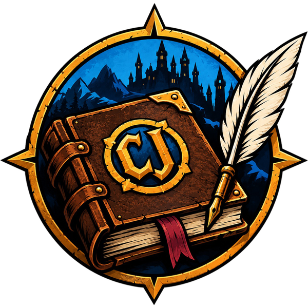

⭐
Levelaufstiege
Wann du welches Level erreicht hast – und wo du dabei warst.
Charakter Journal schreibt mit, während du spielst: jedes Level, jede Quest, jede betretene Zone, jeden besiegten Gegner. Daraus entsteht dein Reisetagebuch – und auf Wunsch eine Geschichte, die nur du erzählen kannst.

CJ'">Du spielst ganz normal weiter. Das Addon schreibt im Hintergrund mit.
Wann du welches Level erreicht hast – und wo du dabei warst.
Angenommene und abgeschlossene Aufträge, in der Reihenfolge deiner Reise.
Wie sich deine Werte mit jedem Level entwickeln.
Jede neu betretene Region, vom ersten Startgebiet bis ins Endgame.
Zusammengefasst und übersichtlich: Welche Feinde hast du wie oft bezwungen?
Welche Zauber und Fertigkeiten du einsetzt und wie dein Stil sich verändert.
… und vieles mehr ist geplant. Schau in die Roadmap.
Installiere das Addon und spiele wie gewohnt. Dein Journal füllt sich von allein.
Speichere dein Journal als Word- oder Excel-Datei, ganz nach deinem Geschmack.
Wähle einen Levelabschnitt (z. B. 1–5), erzeuge daraus einen Prompt und füge ihn in die KI deiner Wahl ein. Welche KI passt?
Schick uns deine Geschichte oder teile sie mit der Community. Die besten Chroniken sollen später als Buch erscheinen.
So könnte ein erzeugter Prompt für die Level 1–5 aussehen (Beispiel). Einfach kopieren, in ChatGPT, Claude, Gemini & Co. einfügen – fertig.
Du bist ein Geschichtenerzähler. Schreibe aus den folgenden Spieldaten eine zusammenhängende, spannende Abenteuergeschichte im Fantasy-Stil. Erfinde Gefühle und Dialoge dazu, aber halte dich an die genannten Orte, Gegner und Ereignisse. Charakter: Thorwin, Zwerg, Krieger Abschnitt: Level 1 bis 5 Reiseverlauf: - Start in Kharanos (Dun Morogh) - Level 2: Quest "Der Wolfsplage ein Ende" abgeschlossen - Level 3: 12 Jungwölfe und 4 Trolle besiegt - Level 4: Neue Zone betreten: Das Tal des Eises - Level 5: Quest "Das Erbe der Ahnen" abgeschlossen Häufigste Fähigkeiten: Heldenhafter Stoß (38x), Donnerknall (11x) Schreibe die Geschichte in der dritten Person, ca. 600 Wörter.
So sieht Charakter Journal aus. Zum Vergrößern anklicken.
Retail, Classic, Classic Hardcore und WoW Forever: Das Journal begleitet dich überall hin.
Der Namen-Generator würfelt dir Vor- und Nachnamen passend zu Klasse und Volk, auf Wunsch auch lustige. Online oder als Datei zum Herunterladen.
Du hast eine Idee, einen Fehler gefunden oder willst deine Geschichte zeigen? Charakter Journal wächst mit seiner Community, und jede Unterstützung hilft.